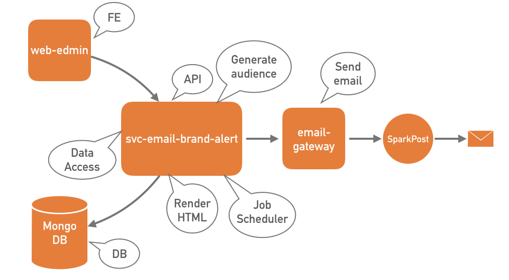
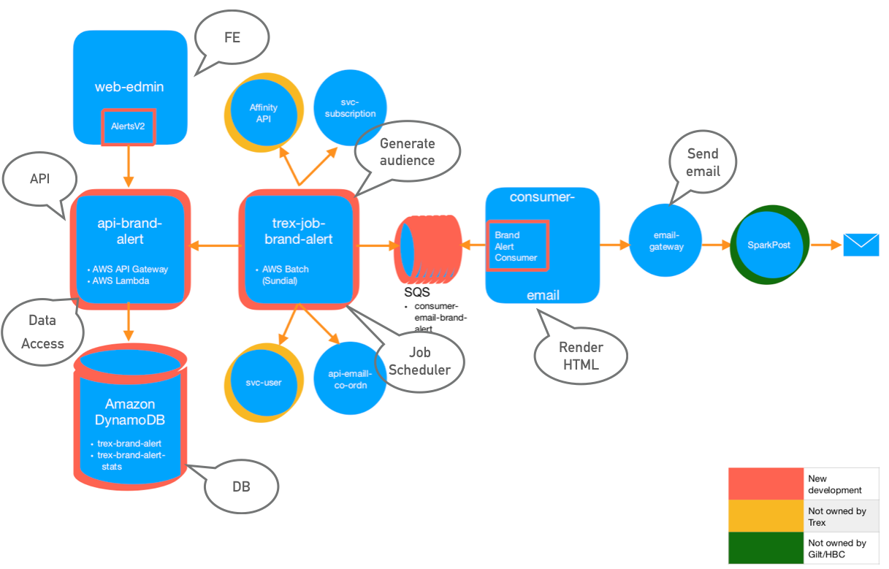

Recently, team T-Rex worked on the re-architecture of the Brand Alerts back end system, a project which we named Brand Alerts V2. In this blog, I share our new architecture detailing some of the new AWS powered components.
Introduction
Brand Alerts V2 breaks down the monolithic architecture of Brand Alerts V1, into small, independent micro services. It enhances flexibility and extensibility of the system, not to forget, facilitates agile development, continuous integration and delivery. It also addresses some of our recent pain points- database and thread scheduling issues, resulting at times in non delivery of brand alert emails. Our intent was to delegate much of the boilerplate work to AWS tools and services, which are built to handle these use cases in tried and tested fashion and at scale.
What Are Brand Alerts?
Before I go any further, let me describe what Brand Alerts are.
Brand Alerts are emails sent to Gilt members notifying them of an upcoming sale on a brand of their liking. A brand alert email is the ideal way to beat the crowd and avail deep discounts on high-end fashion brands. A typical brand alert email is sent in the evening (usually around 6 PM) a day prior to when the brand goes on sale.
It should also be noted that Brand Alert emails have one of the highest click-through rates (among all our triggered emails) and so business is always looking to enhance and experiment, in order to squeeze more out of these emails.
High Level Technical Components
A good first step in system design is to chalk out the various building blocks. Here are the high level technical components that constitute the Brand Alerts system-
-
Front End- for Marketing team to create, visualize brand alert email
-
Database- to store a brand alert record (with brands, sales and their relevant info)
-
Data access layer for the database
-
Brand Alerts API- that other components can call to manage or get information on brand alerts
-
Generate audience (business logic component)
-
Render HTML (business logic component)
-
Send emails (business logic component)
-
Job scheduler for components 5-7
Brand Alerts V1
Before I introduce the V2 architecture, let me establish a baseline by talking about Brand Alerts V1. Here is the architecture diagram (with the distribution of aforementioned eight components)-

The service (svc-email-brand-alert) is a Scala app based on standard
core-server-client model. As is evident from the diagram, this
component is doing a lot of heavy lifting. In addition to holding all the
business logic on how to generate audience and render HTML, it is also a
data access layer, an API (client module) and job scheduler (through a
separate Scheduler thread using Java’s ExecutionService).
Although most of the codebase is located inside one repo, this monolithic architecture faces several disadvantages. It is complex, difficult to maintain and troubleshoot by new team members, difficult to test in smaller pieces and has multiple single points of failure that can bring down the whole system.
Brand Alerts V2
Allow me to introduce Brand Alerts V2 with the following architecture diagram (again, with markings for the eight technical components)-

At first glance, one notices a lot more boxes and arrows. I can assure you that this is a good thing. The monolithic service piece of V1 has now been broken down into several smaller pieces, each of which is doing one or maximum two things and is doing it rather well. These are small, yet powerful components with baked in scalability and cohesiveness, being part of the AWS family.
New Components
Next, let me elaborate on some of the newly born, super-charged components.
Brand Alerts Job
The core component of the brand alerts process is trex-job-brand-alerts.
The job is written in Scala and is scheduled via AWS Batch (Sundial) to
run at a regular interval. No more maintaining our own Scheduler thread!
When the job starts, a two step process is triggered. First, an audience
is generated for each sale/brand in the brand alert. A call is made to
Affinity API to get users who have an ‘affinity for the brand’. This set
of users is then filtered based on the user’s subscription to the brand
alert email and also to preserve his/her brand alert email receive limit
(cadence check). In the second step, a brand alert event message
is constructed corresponding to each user in the filtered
set and is sent to the consumer-email-brand-alert SQS queue.
As previously stated, the Brand Alerts job is configured to run via
Sundial. Sundial, created by Gilt
engineers, is an open source tool build on top
of AWS Batch. This tool enhances AWS Batch capabilities by providing
features such as job scheduling, multi job dependency management,
job dashboard, etc. All job settings are configurable and reside in
bin/job-config.template.json. These include maximum runtime, number of
retries, PagerDuty alerts (in case of job failure), to name a few.
Brand Alerts API
The API for Brand Alerts V2 (api-brand-alert) is written in Python and
is an AWS Lambda, built using Chalice
(which also provides a complimentary AWS API Gateway layering in front
of AWS Lambda).
AWS Lambda provides a lightweight, “server-less” environment to host the API’s endpoints, which are used to manage the lifecycle of a brand alert, from creation to deletion. API Gateway, on the other hand, manages the lifecycle of the API itself and provides valuable features such as access control and traffic monitoring.
In the root folder of the project, an api.json file details resources
and data models of the API and is uploaded to
API Builder
for versioning and client generation.
This component also acts as the Data Access Layer to the DynamoDB database. This ensures that no other component has direct access to the database, and that any component that needs to interact with the database must go through the API. Boto3 library is used to obtain a Python client for DynamoDB.
Brand Alerts Consumer
The brand alert event messages sent to consumer-email-brand-alert queue
are picked up by BrandAlertConsumer (in consumer-email). The consumer
polls for messages at a configurable interval. On finding a message in
the queue, the consumer first renders an HTML body from the information
contained in the message. Subsequently, it creates an object wrapper for
the HTML body and sends it to email-gateway (which then sends it to
our Email Service Provider (ESP), SparkPost, for delivery).
The consumer-email-brand-alert queue is an Amazon SQS queue and has an
associated Dead Letter Queue (DLQ) for message persistence in case of
failure. This lightweight component is fast, secure, reliable and can
scale elastically.
Conclusion
Since its Production launch in early February, Brand Alerts V2 has been running smoothly, without fail, every day, in a timely, reliable manner. The new architecture has emboldened Business, Product and Tech to outline future iterations, packing more features than ever before.
For the Tech team, this effort was a win on many levels. We were able to envision and bring to fruition a micro services architecture, which promises to be a step up from its previous iteration in all aspects. In the process, through our research and experimentation, we acquired knowledge of various AWS tools and other third party libraries.
Finally, AWS, with its vast set of tools and services, is instrumental in building powerful, resilient software. We should invest time and resources in finding the right tools for the job; I promise you it is well worth the effort.